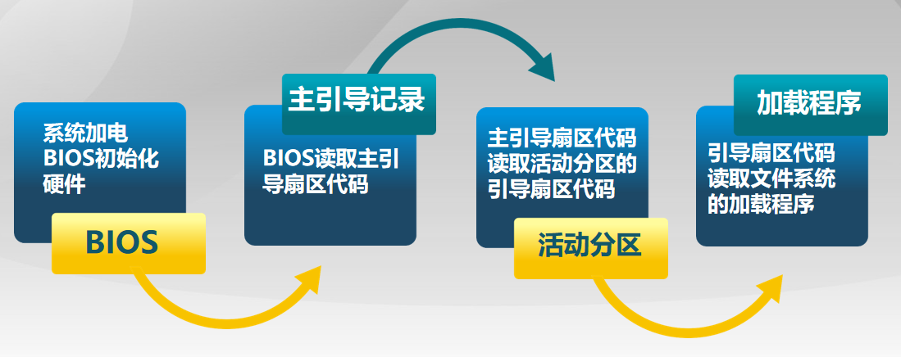
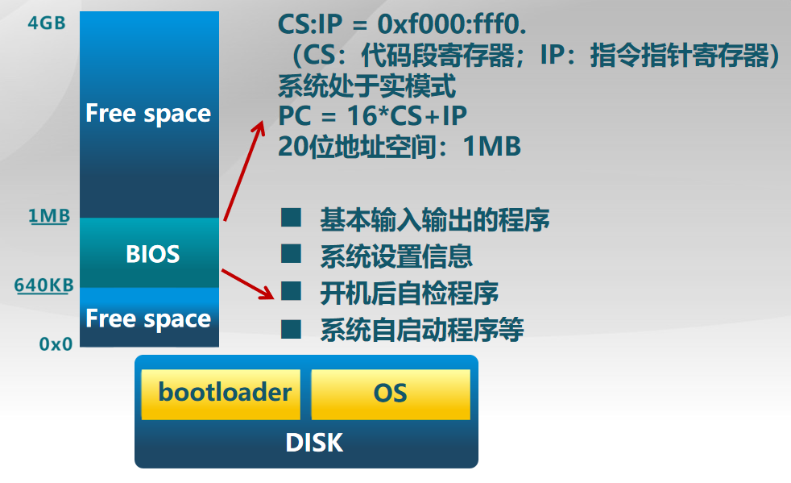
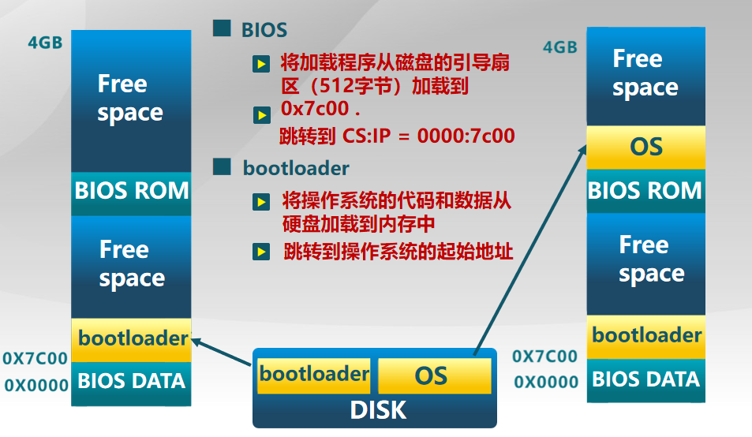
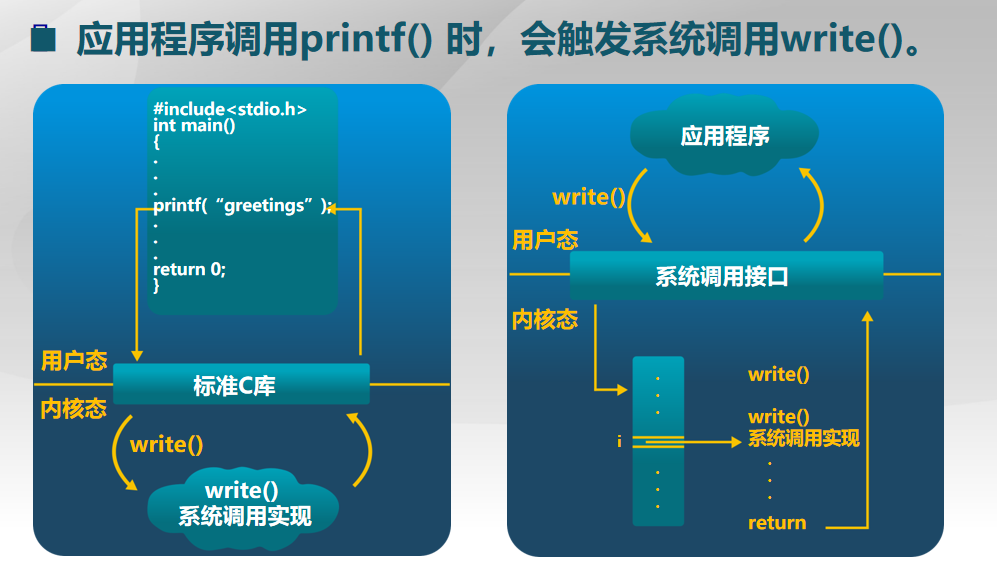

这篇文章主要介绍操作系统的启动，中断、异常、系统调用的特征和差别，以及处理流程（机制）。
操作系统启动
作用解析
- 硬盘（disk）：存放 OS 和 BootLoader
- BIOS：基本 I/O 处理系统
- BootLoader：用于加载 OS，将 OS 从 disk 加载到内存中
BIOS 是一种固化在计算机主板上的软件程序，其中的一个主要作用就是：启动计算机 —— 当你启动计算机时，BIOS 是第一个被执行的程序。它负责进行硬件自检（POST，Power-On Self-Test）以及初始化计算机的硬件设备，包括处理器、内存、硬盘、显卡等。BIOS 还负责加载操作系统的引导程序（BootLoader）。
启动步骤
操作系统启动过程可以概括为以下几个步骤：
- 电源启动
- BIOS 自检
- 加载引导程序（BootLoader）
- 引导程序的工作
- 内核初始化：操作系统内核接管控制权后，它会进行一系列的初始化工作，包括初始化进程管理、内存管理、文件系统等重要的系统组件
- 用户登录
BIOS 自检
计算机启动时，BIOS 从一个特定地址（CS:IP = 0xF000:FFF0）开始执行，这两个寄存器合在一起可以形成一个具体的物理内存地址。BIOS 就从这个内存地址开始执行 POST（加电自检）、寻找显卡和执行 BIOS。
段寄存器（CS）和指令寄存器（IP）是计算机中的两种不同类型的寄存器：
段寄存器 是用于存储内存中的段地址的寄存器。在计算机中，内存被划分为多个段，每个段都有一个唯一的段地址。段寄存器存储着当前程序正在访问的段的地址。当程序需要访问内存中的数据时，它会使用段寄存器中的地址来确定要访问的段，并将其与偏移地址（存储在其他寄存器中）相加以获取最终的物理地址。
** 指令寄存器（也称为程序计数器）** 是用于存储下一条要执行的指令的地址的寄存器。在计算机执行程序时，指令寄存器中保存着当前正在执行的指令的地址。当一条指令执行完毕后，指令寄存器会自动增加，以指向下一条将要执行的指令的地址。这样，计算机可以按顺序执行存储器中的指令序列。指令寄存器的值的改变决定了计算机下一步要执行的操作。
加载 BootLoader
BIOS 负责加载 BootLoader：BIOS 会从预设的启动设备（如硬盘、光盘、USB 等）中加载引导程序（BootLoader）到内存中。引导程序通常位于硬盘的特定扇区或光盘的启动区。
引导程序的工作：引导程序负责初始化硬件（如 CPU、内存等），加载操作系统内核，并将控制权交给内核。它还可以提供多个操作系统的选择菜单（如 GRUB），以供用户选择启动的操作系统。
加载 OS
BootLoader 放在硬盘的第一个主引导扇区（512 字节）。这样，BIOS 从硬盘的第一个扇区寻找，一下便能找到 BootLoader。
BIOS 负责加载 BootLoader：将 BootLoader 从磁盘的引导扇区加载到 0x7C00 内存地址处。
BootLoader 负责加载 OS：将操作系统的代码和数据从硬盘加载到内存中。之后，控制权交给到 OS（跳转到 OS 的起始地址）。
中断、异常和系统调用
操作系统与设备和程序之间的交互可以通过中断、异常和系统调用来实现。
定义
中断（hardware interrupt）：是指外部事件（如硬件设备请求、定时器中断等）打断程序的正常执行，引发操作系统的处理程序来处理相应的事件。通过中断，设备可以向操作系统发出请求，操作系统可以响应并进行相应的处理。
异常（exception）：是指程序执行过程中出现的错误或异常情况，如除零错误、访问非法内存等。当发生异常时，操作系统会捕获并进行相应的处理，例如终止异常程序、显示错误消息等。
系统调用（system call）：是应用程序通过操作系统提供的接口来请求操作系统的服务。通过系统调用，应用程序可以访问操作系统提供的功能，如文件读写、网络通信、内存管理等。应用程序通过系统调用将请求传递给操作系统，操作系统执行相应的操作，并将结果返回给应用程序。
来源
中断来源于外设：来自不同的硬件设备的计时器和网络的中断。
异常来源于不良的应用程序：非法指令或者其他坏的处理状态（如：内存出错）。
系统调用来源于应用程序：应用程序主动向操作系统发出服务请求。
处理时间
- 中断：异步
- 异常：同步
- 系统调用：同步或异步
- 同步：指应用程序等待系统调用的返回结果
- 异步：指应用程序发出系统调用后就去干别的事情了
异步：应用程序不知道什么时候会发生
同步：执行到某一条指令一定会发生该事件
响应状态
- 中断：持续，对用户应用程序是透明的（用户程序感知不到）
- 异常：杀死或重新执行指令
- 系统调用：等待和持续
| 交互方式 | 来源 | 处理时间 | 响应状态 |
|---|---|---|---|
| 中断 | 外设 | 异步 | 持续，对用户应用程序透明 |
| 异常 | 不良的应用程序 | 同步 | 杀死或重新执行指令 |
| 系统调用 | 应用程序 | 同步或异步 | 等待和持续 |
中断和异常处理流程
中断是外设的事件，异常是内部 CPU 的事件。中断和异常迫使 CPU 访问一些与中断和异常相关的功能和服务。
中断处理流程
操作系统的中断处理流程包括硬件中断处理和软件中断处理两个部分。
硬件中断 处理流程如下：
- 硬件设备产生中断信号，例如外设完成数据传输、定时器到达计时器溢出等。
- CPU 检测到中断信号后，会立即停止当前正在执行的指令，并将当前执行指令的上下文（包括寄存器状态、程序计数器等）保存到内存中的堆栈中。
- CPU 根据中断信号的类型，通过中断向量表或中断描述符表（IDT）查找相应的中断处理程序的入口地址。
- CPU 跳转到中断处理程序的入口地址，开始执行中断处理程序。
- 中断处理程序根据中断类型执行相应的操作，例如处理设备的数据、更新操作系统状态等。
- 中断处理程序执行完毕后，将之前保存的上下文从堆栈中恢复回来。
- CPU 继续执行被中断的指令或者执行下一个指令。
软件中断 处理流程如下：
- 程序通过系统调用或软中断指令触发软件中断。
- CPU 执行软中断指令后，会暂停当前正在执行的指令，并将当前执行指令的上下文保存到内存中的堆栈中。
- CPU 根据软中断号，在中断向量表或中断描述符表（IDT）中查找相应的中断处理程序的入口地址。
- CPU 跳转到中断处理程序的入口地址，开始执行中断处理程序。
- 中断处理程序根据软中断号执行相应的操作，例如系统调用、异常处理等。
- 中断处理程序执行完毕后，将之前保存的上下文从堆栈中恢复回来。
- CPU 继续执行被中断的指令或者执行下一个指令。
总的来说，中断处理流程包括 中断信号的检测、上下文的保存与恢复、中断处理程序的执行 等步骤，以保证操作系统能够及时响应硬件设备的请求或软件的触发。
应用程序完全不会感知到中断的产生。
异常处理流程
操作系统的异常处理流程如下：
- 异常产生：异常是指在程序执行过程中发生的错误或异常情况，例如访问非法内存、除零错误等。异常可以由硬件产生，也可以由软件产生。
- 异常检测：CPU 会检测到异常的发生，并中断当前正在执行的指令。
- 异常处理程序选择：CPU 会通过中断向量表或中断描述符表（IDT）查找相应的异常处理程序的入口地址。
- 上下文保存：CPU 会将当前执行指令的上下文（包括寄存器状态、程序计数器等）保存到内存中的堆栈中。
- 异常处理程序执行：CPU 跳转到异常处理程序的入口地址，开始执行异常处理程序。
- 异常处理：异常处理程序会根据异常类型执行相应的操作，例如打印错误信息、终止异常进程、恢复系统状态等。
- 上下文恢复：异常处理程序执行完毕后，将之前保存的上下文从堆栈中恢复回来。
- 异常返回：CPU 继续执行被中断（指的是由异常引起的中断，而不是外部设备或事件所引起的中断）的指令或者执行下一个指令。
总的来说，异常处理流程包括 异常信号的检测、上下文的保存与恢复、异常处理程序的执行 等步骤，异常处理流程的目的是在程序出现异常时能够及时处理异常情况，保证系统的稳定性和可靠性。
系统调用
系统调用来源于应用程序，需要操作系统提供服务，这些服务需要操作系统来执行，这个过程就需要一个接口：系统调用接口。应用程序访问主要是通过高层次的 API 接口，而不是直接进行系统调用。
三种最常用的 APIs：
- Win32 API：用于 Windows
- POSIX API：用于 POSIX-based systems（包括 UNIX，LINUX，Mac OS X）
- Java API：用于 JAVA 虚拟机（JVM 跨平台）
特点：
- 通常情况下，每个系统调用对应一个系统调用号，系统调用接口根据这些序号来维护表的索引。
- 系统调用接口调用内核态中预期的系统调用，并返回系统调用的状态和其他任何返回值。
- 用户不需要知道系统调用是如何实现的，只需要获取 API 和了解操作系统将什么作为返回结果。
用户态：操作系统运行中，CPU 所处的特权级别特别低，不能访问特权指令、I/O 指令。
内核态：操作系统运行中，CPU 所处的级别很高，可以执行任何一条指令，包括特权指令、I/O 指令。
系统调用 ：触发 CPU 从用户态到内核态的转换。切换程序和内核的堆栈，需要一定的开销，但是换来了安全。
系统调用是跨越操作系统边界的开销（值得的且必须的，保证了操作系统的安全性）：
- 在执行时间上的开销超过程序调用
- 开销：
- 建立中断、异常、系统调用号与对应服务例程映射关系的初始化开销
- 建立内核堆栈（用于内核退出时保存，内核执行时恢复，类似于应用程序的堆栈）
- 验证参数（内核不信任应用程序，故而需要验证参数）
- 内核态映射到用户态的地址空间（通过拷贝的方式传递数据，不像用户态下的应用程序，可以通过指针传递实现）
- 更新页面映射权限
- 内核态独立地址空间
- 通过在 TLB 中维护不同的页表实现
「内核态独立地址空间」是指在操作系统中，内核和用户程序所使用的内存地址空间是相互独立的。
什么是更新页面映射权限
「更新页面映射权限」是指在操作系统中，对虚拟内存中的页面进行权限的调整或修改。
在虚拟内存管理中，操作系统将物理内存空间映射到进程的虚拟地址空间中，形成了一种虚拟内存映射。每个页面都有对应的权限，例如读、写、执行等。当需要修改某个页面的权限时，就需要进行页面映射权限的更新。
更新页面映射权限的具体操作包括：
- 检查该页面的当前权限：首先，操作系统会检查该页面的当前权限，确定要进行哪些修改。
- 修改页面权限：根据需要，操作系统会修改页面的权限，例如增加或删除某项权限。
- 更新页表 ：在虚拟内存管理中，每个进程都有自己的页表， 用于记录虚拟地址与物理地址之间的映射关系。当页面的权限发生变化时，操作系统需要更新相应的页表项，以反映最新的权限信息。
通过更新页面映射权限，操作系统可以 实现对进程的内存访问控制，保证系统的安全性和稳定性。
应用程序不能直接访问外设
应用程序不能直接访问外设，而要通过操作系统的原因主要有以下几点：
- 安全性：操作系统（内核）是被信任的第三方，只有操作系统才能执行特权指令，保护硬件和系统资源的安全。
- 统一性：通过操作系统提供的接口，应用程序可以统一地访问不同的外设，而不需要关心具体的硬件细节。
- 方便性：操作系统提供了一些高级功能和服务，如文件系统、网络协议等，应用程序可以更方便地使用这些功能。
参考资料：
1：https://github.com/OXygenMoon/OperatingSystemInDepth
2：https://blog.csdn.net/weixin_53407527/category_11825873.html